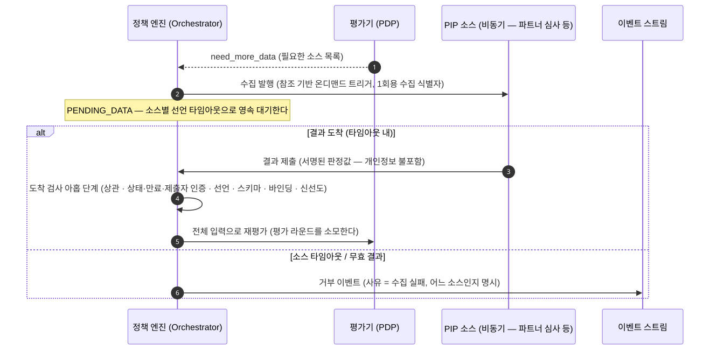

비동기 수집
파트너 심사처럼 즉시 답이 오지 않는 소스가 있습니다. 그런 소스는 판단에 필요한 사실을 평가
시점에 읽어 오는 수집 경로인 PIP(자세히)의 비동기 쪽입니다. 그 답을
기다리는 동안 요청이 머무는 상태가 PENDING_DATA입니다.
비싼 조회는 룰이 요구할 때만 일어납니다
모든 요청에 AML 심사를 적용하지 않습니다. 룰이 그 사실을 참조해야 발동할 때만 수집이 트리거됩니다.
발동하지 않는 금액 구간은 조회 자체가 없습니다. 룰의 scope가 요청 필드만 보므로, 어떤 룰이
발동하는지는 데이터를 하나도 읽지 않고 확정됩니다.
기다리는 상태를 영속으로 만듭니다
평가 루프 수집은 mode와 무관하게 PENDING_DATA를 거칩니다. 동기 소스는 그 안에서 어댑터가
인프로세스로 채워 바로 재개하고, 비동기 소스는 파트너의 제출이 도착할 때까지 영속 대기합니다.
대기 시간의 상한은 소스마다 선언됩니다. 레지스트리에 응답 타임아웃이 적혀 있고, 그 값을 넘기면 기다림이 끝납니다.
전체 흐름

수집 식별자는 1회용입니다
수집을 발행할 때 그 건에만 유효한 식별자를 만들어 함께 보냅니다. 파트너는 결과를 제출하면서 그 식별자를 그대로 되돌려 줍니다.
엔진의 결정 식별자는 파트너에게 나가지 않습니다. 파트너가 아는 것은 이 1회용 수집 식별자 하나이고, 그것으로 다른 요청을 건드릴 수 없습니다.
도착한 결과는 아홉 단계를 순서대로 거칩니다
제출을 받았다고 바로 입력에 넣지 않습니다. 검사 순서는 싼 것부터가 아니라 좁은 것부터입니다. 앞 단계를 통과하지 못한 제출에는 뒤 단계의 결과를 알려 주지 않습니다. 아래가 그 순서입니다.
- 대응 확인: 이 수집 식별자가 실제로 발행된 미결 수집인가
- 상태·만료·제출자 인증: 아직 소비되지 않았고 시한 안이며 서명이 그 수집이 기대한 파트너의 것인가
- 선언 존재: 그 소스의 레지스트리 선언이 아직 있는가
- 스키마 자가 점검: 그 소스가 자가 점검에서 수집 거부 상태로 표시되지 않았는가
- 스키마 버전: 수집을 발행한 시점의 스냅샷 스키마 버전과 지금 선언이 같은가
- 부모 요청: 이 수집을 낸 판단 요청이 재개 가능한 상태로 있는가
- 요청 바인딩: 제출된 결과가 그 요청의 정규형 내용에 묶여 있는가
- 스냅샷 스키마: 제출된 스냅샷이 선언된 스키마를 만족하는가
- 신선도: 소스에 선언된 최대 나이 안인가
단계별 거절 사유 코드는 PIP에 있습니다.
아홉을 통과한 제출은 단일 소비로 반영됩니다. 다른 제출이 먼저 소비하면 중복으로 접수되고 입력에 들어가지 않습니다.
요청 본문을 신뢰하지 않습니다. 어느 파트너의 제출인지는 인증된 신원이 정하고, 본문이 주장하는 값이 정하지 않습니다.
파트너가 보내는 것은 판정값입니다
파트너가 보내는 것은 판정값입니다. 엔진이 하는 일은 그 판정값이 이 요청에 묶인 것인지 확인하는 것입니다. 심사 기준을 다시 계산하지 않습니다.
위험 점수 임계 같은 세부는 심사 주체가 자기 경계 안에서 판정값으로 요약해 보냅니다. 개인정보가 어디까지 오가는지는 PIP에 있습니다.
타임아웃은 실패가 아니라 거부입니다
선언된 시간 안에 답이 오지 않으면 거부로 종결합니다. 예외 없이 fail-closed입니다.
거부 사유에 어느 소스가 못 왔는지를 적고, 사유 코드로 정책 거부와 구분합니다. 그 코드가 재제출 가능함을 식별합니다. 소스가 복구되면 요청을 소유한 서비스가 다시 올립니다.
FAILED는 여기에 쓰지 않습니다. 그쪽은 정규화 실패나 평가 크래시 같은 엔진 자체의 오류 전용
신호입니다.
재진입도 라운드를 씁니다
결과가 다 모이면 EVALUATING으로 돌아가 전체 입력으로 다시 평가합니다. 부분 재평가는 없습니다.
이 왕복에 상한이 있습니다. 평가 라운드는 한 판단 요청 안에서 평가가 몇 번째로 실행됐는지입니다. 그 상한은 5이고 재개 재평가도 같은 카운터를 소모합니다. 근거는 결정과 결합에 있습니다.
소스 장애가 오래가면 정책을 바꿉니다
장기 장애에 특수 런타임 모드를 두지 않습니다. 장애가 난 소스를 참조하지 않도록 룰을 고쳐 정식 발행 경로로 내보냅니다.
제안자와 승인자를 갈라 두는 정책 변경 거버넌스인 maker-checker(자세히)와 테스트 벡터가 그대로 적용되고, 복구 뒤 원복도 같은 경로입니다. 그래서 감사에 완화와 원복이 전부 남습니다.
다음으로
- PIP — 어떤 소스가 있고 어떻게 선언되나
- obligation 수집 — 사람을 기다리는 쪽의 대기
- 결정과 결합 — 평가 라운드 상한